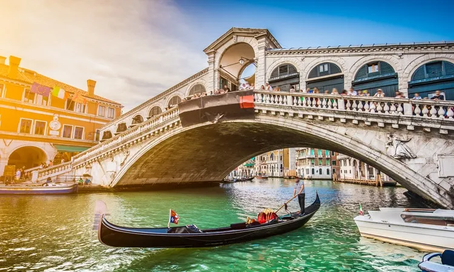

Turismo na Itália
Principais Destinos
- Roma: Coliseu, Fórum Romano, Vaticano
- Florença: Galleria degli Uffizi, Duomo, Ponte Vecchio
- Veneza: Praça São Marcos, Ponte Rialto, passeios de gôndola
- Milão: Duomo di Milano, Galeria Vittorio Emanuele II
- Costa Amalfitana: Positano, Amalfi, Ravello
Dicas de Viagem
Para aproveitar ao máximo sua viagem à Itália:
- Aprenda algumas frases básicas em italiano
- Compre ingressos para atrações populares com antecedência
- Experimente a culinária local em trattorias autênticas
- Respeite os costumes locais, especialmente ao visitar igrejas
- Utilize o transporte público para economizar e ver mais da cidade